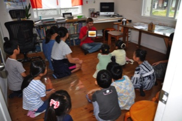
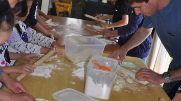
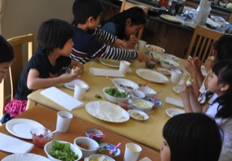
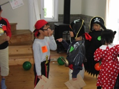
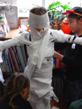
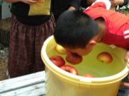

<!DOCTYPE html>
<html lang="en">
	<head>
		<title>レッスンについて | Canada Club English School  </title>
		<!-- Published with the 'Sunny' theme, designed and developed by Will Woodgate - @willwoodgate -->
		
<!doctype html>
<html>
  <head>
    <script src="https://kit.fontawesome.com/f556c023a3.js" crossorigin="anonymous"></script>
  </head>

  <body>
    <!-- Ready to use Font Awesome. Activate interlock. Dynotherms - connected. Infracells - up. Icons are go! -->
  </body>
</html>

<script>
  !function(g,s,q,r,d){r=g[r]=g[r]||function(){(r.q=r.q||[]).push(
  arguments)};d=s.createElement(q);q=s.getElementsByTagName(q)[0];
  d.src='//d1l6p2sc9645hc.cloudfront.net/tracker.js';q.parentNode.
  insertBefore(d,q)}(window,document,'script','_gs');

  _gs('GSN-625828-H');
  _gs('set', 'anonymizeIP', true);
</script>
<meta http-equiv="Content-Type" content="text/html; charset=utf-8" />
		<meta name="robots" content="index, follow" />
		<meta name="generator" content="RapidWeaver" />
		
	<meta name="twitter:card" content="summary">
	<meta name="twitter:site" content="@canadaclubjp">
	<meta name="twitter:creator" content="@canadaclubjp">
	<meta name="twitter:title" content="レッスンについて | Canada Club English School  ">
	<meta name="twitter:image" content="https://canadaclubjp.com/resources/CCES-homepage-sitelogo2.jpg">
	<meta name="twitter:url" content="https://canadaclubjp.com/page/index.html">
	<meta property="og:type" content="website">
	<meta property="og:site_name" content="Canada Club English School  ">
	<meta property="og:title" content="レッスンについて | Canada Club English School  ">
	<meta property="og:image" content="https://canadaclubjp.com/resources/CCES-homepage-sitelogo2.jpg">
	<meta property="og:url" content="https://canadaclubjp.com/page/index.html">
		
		<meta name="viewport" content="width=device-width, initial-scale=1.0, user-scalable=yes">
		<link rel="stylesheet" type="text/css" media="all" href="../rw_common/themes/sunny/consolidated.css?rwcache=701511614" />
		
		
		
		
		
		
		
		
				<link rel='stylesheet' type='text/css' media='all' href='../rw_common/plugins/stacks/stacks.css?rwcache=701511614' />
		<link rel='stylesheet' type='text/css' media='all' href='files/stacks_page_page1.css?rwcache=701511614' />
        
        
        
        
		
        <meta name="formatter" content="Stacks v4.3.0 (6300)" >
		<meta class="stacks 4 stack version" id="columns" name="2 Columns (Stacks 2)" content="3.0.0">
		<meta class="stacks 4 stack version" id="three_columns" name="3 Columns (Stacks 2)" content="3.0.0">
		

	</head>
	<body class="hasBootstrap hasFreeStyle themeFlood">
		<div id="extraContainer1"></div>
		<div class="clearer"></div>
		<header id="header">
			<div id="headerContent">
				<div id="siteTitle" class="widthWrapper">
					<div id="extraContainer2"></div>
					<div id="logo"><a href="https://canadaclubjp.com/"></a></div>
					<div id="extraContainer3"></div>
					<h1><a href="https://canadaclubjp.com/">Canada Club English School  </a></h1>
					<h2></h2>
					<nav id="nav1" ><ul><li><a href="../" rel="">ホーム</a></li><li><a href="./" rel="" class="current">レッスンについて</a></li><li><a href="../page-3/" rel="">講師について</a></li><li><a href="../page-4/" rel="">よくある質問</a></li><li><a href="../page-5/" rel="">お問い合わせ</a></li><li><a href="../blog/" rel="">ブログ（英語）</a></li><li><a href="../page-6/" rel="">レッスンの動画</a></li><li><a href="../page-7/" rel="">Zoomの設定方法</a></li></ul></nav>
				</div>
			</div>
			<div id="scrollDownButton">
				<a href="#contentContainer" class="smoothscroll">
					<i class="far fa-arrow-alt-circle-down"></i>
				</a>
			</div>
		</header>
		<div id="contentContainerWrap">
			<div id="contentContainer" class="widthWrapper">
				<div id="extraContainer4"></div>
				<nav id="nav2" ><ul></ul></nav>
				<div id="content" role="main">
					
<div id='stacks_out_1' class='stacks_top'><div id='stacks_in_1' class=''><div id='stacks_out_2' class='stacks_out'><div id='stacks_in_2' class='stacks_in text_stack'><p style="text-align:center;"><span style="font:35px HiraKakuProN-W6; font-weight:bold; color:#4C4C4C;font-weight:bold; ">レッスンについて</span></p></div></div><div id='stacks_out_4' class='stacks_out'><div id='stacks_in_4' class='stacks_in com_yourhead_stacks_three_columns_stack'><div class='s3_row'>
	<div class='s3_column s3_column_left'><div id='stacks_out_14' class='stacks_out'><div id='stacks_in_14' class='stacks_in image_stack'>
<div class='centered_image' >
    
</div>

</div></div></div>
	<div class='s3_column s3_column_center'><div id='stacks_out_16' class='stacks_out'><div id='stacks_in_16' class='stacks_in image_stack'>
<div class='centered_image' >
    
</div>

</div></div></div>
	<div class='s3_column s3_column_right'><div id='stacks_out_18' class='stacks_out'><div id='stacks_in_18' class='stacks_in image_stack'>
<div class='centered_image' >
    
</div>

</div></div></div>
</div></div></div><div id='stacks_out_24' class='stacks_out'><div id='stacks_in_24' class='stacks_in text_stack'><p style="text-align:center;"><span style="font:12px HiraKakuProN-W3; ">みんなでタコスを作ってたべたよ。<br /></span></p></div></div><div id='stacks_out_26' class='stacks_out'><div id='stacks_in_26' class='stacks_in columns_stack'><div class='stacks_div stacks_left'><div id='stacks_out_28' class='stacks_out'><div id='stacks_in_28' class='stacks_in text_stack'><span id='stacks_in_29'><p style="text-align:center;"><span style="font:15px HiraKakuProN-W6; font-weight:bold; font-weight:bold; ">授業時間：</span></p></span></div></div></div><div class='stacks_div stacks_right'><div id='stacks_out_31' class='stacks_out'><div id='stacks_in_31' class='stacks_in text_stack'><span style="font:14px HiraKakuProN-W3; ">全クラス６０分</span></div></div></div></div></div><div id='stacks_out_33' class='stacks_out'><div id='stacks_in_33' class='stacks_in columns_stack'><div class='stacks_div stacks_left'><div id='stacks_out_35' class='stacks_out'><div id='stacks_in_35' class='stacks_in text_stack'><p style="text-align:center;"><span style="font:14px HiraKakuProN-W6; font-weight:bold; font-weight:bold; ">営業時間：</span></p></div></div></div><div class='stacks_div stacks_right'><div id='stacks_out_38' class='stacks_out'><div id='stacks_in_38' class='stacks_in text_stack'><span style="font:14px HiraKakuProN-W3; color:#463C3C;">月曜日から金曜日　午前９時から午後１０時（最終授業開始時間は午後９時）<br />土曜日　　　　　　午前９時から午後３時（最終授業開始時間は午後２時）　<br />日曜　祝日　年末年始等　休講</span></div></div></div></div></div><div id='stacks_out_40' class='stacks_out'><div id='stacks_in_40' class='stacks_in columns_stack'><div class='stacks_div stacks_left'><div id='stacks_out_42' class='stacks_out'><div id='stacks_in_42' class='stacks_in text_stack'><p style="text-align:center;"><span style="font:14px HiraKakuProN-W6; font-weight:bold; font-weight:bold; ">月　　謝：</span></p></div></div></div><div class='stacks_div stacks_right'><div id='stacks_out_45' class='stacks_out'><div id='stacks_in_45' class='stacks_in three_columns_stack'><div class='stacks_div stacks_left'><div id='stacks_out_47' class='stacks_out'><div id='stacks_in_47' class='stacks_in text_stack'><span style="font:14px HiraKakuProN-W3; color:#4C4C4C;">グループレッスン</span></div></div></div><div class='stacks_div stacks_right'><div id='stacks_out_50' class='stacks_out'><div id='stacks_in_50' class='stacks_in text_stack'><span style="font:14px HiraKakuProN-W3; color:#4C4C4C;">月額６０００円</span><span style="color:#4C4C4C;"><br /></span><span style="font:14px HiraKakuProN-W3; color:#4C4C4C;">月額７０００円</span></div></div></div><div class='stacks_div stacks_middle'><div id='stacks_out_53' class='stacks_out'><div id='stacks_in_53' class='stacks_in text_stack'><span style="font:14px HiraKakuProN-W3; color:#4C4C4C;">幼稚園児</span><span style="color:#4C4C4C;"><br /></span><span style="font:14px HiraKakuProN-W3; color:#4C4C4C;">小学生以上</span></div></div></div></div></div><div id='stacks_out_55' class='stacks_out'><div id='stacks_in_55' class='stacks_in columns_stack'><div class='stacks_div stacks_left'><div class='slice empty out'><div class='slice empty in'></div></div></div><div class='stacks_div stacks_right'><div id='stacks_out_58' class='stacks_out'><div id='stacks_in_58' class='stacks_in text_stack'><span style="font:14px HiraKakuProN-W3; ">（年間４４回レッスン保障、詳しくは</span><span style="font:14px HiraKakuProN-W6; font-weight:bold; font-weight:bold; ">よくある質問へ</span><span style="font:14px HiraKakuProN-W3; ">)</span></div></div></div></div></div><div id='stacks_out_60' class='stacks_out'><div id='stacks_in_60' class='stacks_in three_columns_stack'><div class='stacks_div stacks_left'><div id='stacks_out_62' class='stacks_out'><div id='stacks_in_62' class='stacks_in text_stack'><span style="font:14px HiraKakuProN-W3; "> プライベートレッスン<br /><br /></span></div></div></div><div class='stacks_div stacks_right'><div id='stacks_out_65' class='stacks_out'><div id='stacks_in_65' class='stacks_in text_stack'><span style="font:14px HiraKakuProN-W3; ">１回 ５０００円<br /></span><span style="font:14px HiraKakuProN-W3; "><br /></span></div></div></div><div class='stacks_div stacks_middle'><div class='slice empty out'><div class='slice empty in'></div></div></div></div></div></div></div></div><div id='stacks_out_68' class='stacks_out'><div id='stacks_in_68' class='stacks_in columns_stack'><div class='stacks_div stacks_left'><div id='stacks_out_70' class='stacks_out'><div id='stacks_in_70' class='stacks_in text_stack'><p style="text-align:right;"><span style="font:14px HiraKakuProN-W6; font-weight:bold; font-weight:bold; ">入学金・教材費：</span></p></div></div></div><div class='stacks_div stacks_right'><div id='stacks_out_73' class='stacks_out'><div id='stacks_in_73' class='stacks_in text_stack'><span style="font:14px HiraKakuProN-W3; ">入学金及び教材費はいただいておりません。</span></div></div></div></div></div><div id='stacks_out_75' class='stacks_out'><div id='stacks_in_75' class='stacks_in text_stack'><span id='stacks_in_76'><span style="font:12px HiraKakuProN-W6; font-weight:bold; font-weight:bold; ">　体験レッスンは随時受け付けております。詳しいスケジュールについては，メールまたはお電話で遠慮なくお問い合わせください。</span></span></div></div><div id='stacks_out_77' class='stacks_out'><div id='stacks_in_77' class='stacks_in three_columns_stack'><div class='stacks_div stacks_left'><div id='stacks_out_79' class='stacks_out'><div id='stacks_in_79' class='stacks_in image_stack'>
<div class='centered_image' >
    
</div>

</div></div></div><div class='stacks_div stacks_right'><div id='stacks_out_82' class='stacks_out'><div id='stacks_in_82' class='stacks_in image_stack'>
<div class='centered_image' >
    
</div>

</div></div></div><div class='stacks_div stacks_middle'><div id='stacks_out_85' class='stacks_out'><div id='stacks_in_85' class='stacks_in image_stack'>
<div class='centered_image' >
    
</div>

</div></div></div></div></div><div id='stacks_out_87' class='stacks_out'><div id='stacks_in_87' class='stacks_in text_stack'><p style="text-align:center;"><span style="font:11px HiraKakuProN-W3; color:#463C3C;">１０月のハロウィーンパーテ</span><span style="font:9px HiraKakuProN-W3; color:#463C3C;">イ</span><span style="font:11px HiraKakuProN-W3; color:#463C3C;">ー</span></p></div></div><div id='stacks_out_89' class='stacks_out'><div id='stacks_in_89' class='stacks_in text_stack'><span style="font:16px HiraKakuProN-W6; font-weight:bold; font-weight:bold; ">レッスン内容</span></div></div><div id='stacks_out_91' class='stacks_out'><div id='stacks_in_91' class='stacks_in columns_stack'><div class='stacks_div stacks_left'><div id='stacks_out_93' class='stacks_out'><div id='stacks_in_93' class='stacks_in text_stack'><p style="text-align:center;"><span style="font:14px HiraKakuProN-W6; font-weight:bold; color:#4C4C4C;font-weight:bold; ">幼児クラス</span><span style="font-size:14px; color:#4C4C4C;font-weight:bold; "><br /></span><span style="font:14px HiraKakuProN-W6; font-weight:bold; color:#4C4C4C;font-weight:bold; ">（４歳から）</span><span style="font:14px HiraKakuProN-W6; font-weight:bold; font-weight:bold; "><br /></span></p></div></div></div><div class='stacks_div stacks_right'><div id='stacks_out_96' class='stacks_out'><div id='stacks_in_96' class='stacks_in text_stack'><span style="font:12px HiraginoSans-W3; color:#4C4C4C;">フォニックスや歌，英語の絵本の読み聞かせなどを通じて，英語に慣れ親しんでいきます。またこの時期からABCの読み書きも少しづつ導入して，レッスンを通じて英語だけの時間，英語だけの指示などに慣れていきます</span><span style="font:12px HiraginoSans-W3; ">。</span></div></div></div></div></div><div id='stacks_out_98' class='stacks_out'><div id='stacks_in_98' class='stacks_in columns_stack'><div class='stacks_div stacks_left'><div id='stacks_out_100' class='stacks_out'><div id='stacks_in_100' class='stacks_in text_stack'><p style="text-align:center;"><span style="font:14px HiraKakuProN-W6; font-weight:bold; color:#4C4C4C;font-weight:bold; ">小学生クラス</span><span style="font-size:14px; color:#4C4C4C;font-weight:bold; "><br /></span><span style="font:14px HiraKakuProN-W6; font-weight:bold; color:#4C4C4C;font-weight:bold; ">（低学年）</span></p></div></div></div><div class='stacks_div stacks_right'><div id='stacks_out_103' class='stacks_out'><div id='stacks_in_103' class='stacks_in text_stack'><span style="font:12px HiraginoSans-W3; color:#4C4C4C;">フォニックスを使って単語を読んだり，英語を話すために必要な文法や文の基本を，日本語を介さず英語で学び始めます。また、習った文を使って自分自身のことを答えたり，書いたりします。教室では生徒も英語しか使いません。</span></div></div></div></div></div><div id='stacks_out_105' class='stacks_out'><div id='stacks_in_105' class='stacks_in columns_stack'><div class='stacks_div stacks_left'><div id='stacks_out_107' class='stacks_out'><div id='stacks_in_107' class='stacks_in text_stack'><p style="text-align:center;"><span style="font:14px HiraKakuProN-W6; font-weight:bold; color:#4C4C4C;font-weight:bold; ">小学生クラス</span><span style="font-size:14px; color:#4C4C4C;font-weight:bold; "><br /></span><span style="font:14px HiraKakuProN-W6; font-weight:bold; color:#4C4C4C;font-weight:bold; ">（高学年）</span></p></div></div></div><div class='stacks_div stacks_right'><div id='stacks_out_110' class='stacks_out'><div id='stacks_in_110' class='stacks_in text_stack'><span style="font:12px HiraginoSans-W3; color:#4C4C4C;">たくさんの文法や単語に触れ，吸収していく時期です。引き続き状況に応じた英語の文法や文を学び，使う練習をします。少し高度な英語のゲームなども楽しめる様になってきます。中学校英語の準備時期でもあります</span><span style="font:12px HiraginoSans-W3; ">。</span></div></div></div></div></div><div id='stacks_out_112' class='stacks_out'><div id='stacks_in_112' class='stacks_in columns_stack'><div class='stacks_div stacks_left'><div id='stacks_out_114' class='stacks_out'><div id='stacks_in_114' class='stacks_in text_stack'><p style="text-align:center;"><span style="font:14px HiraKakuProN-W6; font-weight:bold; color:#4C4C4C;font-weight:bold; ">中学生クラス</span></p></div></div></div><div class='stacks_div stacks_right'><div id='stacks_out_117' class='stacks_out'><div id='stacks_in_117' class='stacks_in text_stack'><span style="font:13px HiraKakuProN-W3; color:#4C4C4C;">今までのクラスで練習してきた文法やリスニングが，学校の授業と繋がり，役立ち始めます。また、ゆっくりでも自分の意見や日常について英語で話すことができる様になります。たくさんの文章を読み，話し、聞くことで、各技能をバランスよく伸ばし、今後の高校入試や大学受験にも役立てます。英検対策（主に二次試験）も行っています。　</span></div></div></div></div></div><div id='stacks_out_119' class='stacks_out'><div id='stacks_in_119' class='stacks_in columns_stack'><div class='stacks_div stacks_left'><div id='stacks_out_121' class='stacks_out'><div id='stacks_in_121' class='stacks_in text_stack'><p style="text-align:center;"><span style="font:14px HiraKakuProN-W6; font-weight:bold; color:#4C4C4C;font-weight:bold; ">高校生クラス</span></p></div></div></div><div class='stacks_div stacks_right'><div id='stacks_out_124' class='stacks_out'><div id='stacks_in_124' class='stacks_in text_stack'><span style="font:13px HiraKakuProN-W3; color:#4C4C4C;">時期やレベルにあったたくさんの文章を読み，理解しているかを確認後それについての質疑応答や，自分の意見を述べたりします。会話や受験に役立つ語彙もたくさんん学び，同時に学校のテストや大学受験にも役立つリスニング練習もしますので、バランスの取れた力をつけることができます。</span></div></div></div></div></div><div id='stacks_out_126' class='stacks_out'><div id='stacks_in_126' class='stacks_in columns_stack'><div class='stacks_div stacks_left'><div id='stacks_out_128' class='stacks_out'><div id='stacks_in_128' class='stacks_in text_stack'><p style="text-align:center;"><span style="font:14px HiraKakuProN-W6; font-weight:bold; color:#4C4C4C;font-weight:bold; ">大人のクラス</span></p></div></div></div><div class='stacks_div stacks_right'><div id='stacks_out_131' class='stacks_out'><div id='stacks_in_131' class='stacks_in text_stack'><span style="font:13px HiraKakuProN-W3; color:#4C4C4C;">会話の基礎から，旅行、時事問題まで興味やレベルに応じたレッスンをします。プライベートは初心者の文法からビジネスレッスンや学術論文まで対応しています。</span></div></div></div></div></div><div id='stacks_out_133' class='stacks_out'><div id='stacks_in_133' class='stacks_in columns_stack'><div class='stacks_div stacks_left'><div id='stacks_out_135' class='stacks_out'><div id='stacks_in_135' class='stacks_in text_stack'><p style="text-align:center;"><span style="font:14px HiraKakuProN-W6; font-weight:bold; color:#4C4C4C;font-weight:bold; ">英検二次対策</span></p></div></div></div><div class='stacks_div stacks_right'><div id='stacks_out_138' class='stacks_out'><div id='stacks_in_138' class='stacks_in text_stack'><span style="font:13px HiraKakuProN-W3; color:#4C4C4C;">英検の二次試験（面接）の対策をおこないます。合格基準を明確に知る講師ならではの的確なアドバイスを出します。対策後の合格率は、ほぼ１００％です。</span></div></div></div></div></div></div></div>

				</div>
				<div class="clearer"></div>
				<div id="extraContainer5"></div>
				<aside id="aside">
					<div id="extraContainer6"></div>
					<div id="sidebarTitle"><h3></h3></div>
					<div id="sidebar"></div>
					<div id="pluginSidebar"></div>
					<div id="extraContainer7"></div>
				</aside>
			</div>
			<div id="extraContainer8"></div>
			<footer id="footer">
				<div class="widthWrapper">
					<div id="extraContainer9"></div>
					<div id="lastUpdated"><span id="updatedLabel"></span> 2023/03/26</div>
					<div id="breadcrumb"><span id="breadcrumbLabel"></span> </div>
					<div id="footerContent">&copy; 2020 arlen <a href="#" id="rw_email_contact">お問合せ</a><script type="text/javascript">var _rwObsfuscatedHref0 = "mai";var _rwObsfuscatedHref1 = "lto";var _rwObsfuscatedHref2 = ":ca";var _rwObsfuscatedHref3 = "nad";var _rwObsfuscatedHref4 = "acl";var _rwObsfuscatedHref5 = "ubj";var _rwObsfuscatedHref6 = "p@b";var _rwObsfuscatedHref7 = "loo";var _rwObsfuscatedHref8 = "m.o";var _rwObsfuscatedHref9 = "cn.";var _rwObsfuscatedHref10 = "ne.";var _rwObsfuscatedHref11 = "jp";var _rwObsfuscatedHref = _rwObsfuscatedHref0+_rwObsfuscatedHref1+_rwObsfuscatedHref2+_rwObsfuscatedHref3+_rwObsfuscatedHref4+_rwObsfuscatedHref5+_rwObsfuscatedHref6+_rwObsfuscatedHref7+_rwObsfuscatedHref8+_rwObsfuscatedHref9+_rwObsfuscatedHref10+_rwObsfuscatedHref11; document.getElementById("rw_email_contact").href = _rwObsfuscatedHref;</script></div>
					<div id="extraContainer10"></div>
				</div>
			</footer>
		</div>
		<script src="../rw_common/themes/sunny/scripts/jquery-3.3.1.min.js?rwcache=701511614"></script>
		<script src="../rw_common/themes/sunny/scripts/scripts.js?rwcache=701511614"></script>
		<script src="../rw_common/themes/sunny/custom.js?rwcache=701511614"></script>
		
	</body>
</html>